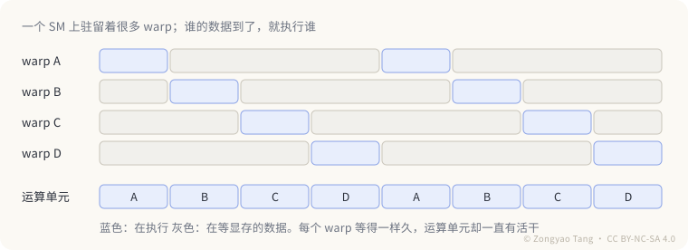

会写 kernel 之后，下一个问题是：它为什么不够快？答案藏在硬件里。线索是：线程在硬件上以 32 个一组（warp）执行 → GPU 靠在 warp 之间切换来掩盖等数据的时间 → 而数据离计算单元有远有近 → 用“每搬 1 字节做几次运算”衡量一个 kernel → 分块就是提高这个比值的第一招。
第 3 部分 · GPU 与 CUDA 执行模型3.3 计算与内存架构
这一单元回答GPU 硬件长什么样？为什么“搬数据”往往比“算”更贵？
承接 3.2：你会开线程了，现在看这些线程在硬件上怎么跑、数据从哪里来。
讲解
1warp：32 个线程听同一个口令
block 被分到 SM 上之后，再切成每 32 个线程一组的 warp。一个 warp 的 32 个线程在同一时刻执行同一条指令，只是数据不同。warp 才是 GPU 真正调度的单位。
GPU 的核心由若干个 SM（streaming multiprocessor）组成，一个 block 会被整个分配给某一个 SM 执行。
SM 并不是给每个线程配一套独立的控制电路。它把 block 里的线程按编号每 32 个分成一组，叫一个 warp：0–31 号是第一个 warp，32–63 号是第二个，以此类推。一个 warp 共用一个取指令、译码的控制单元，所以 32 个线程在同一时刻执行的是同一条指令，只是各自操作各自的数据。
这是 3.1 那条设计思路的具体体现：控制逻辑 32 个线程分摊一份，省下的面积都用来做运算。
由此得到两个直接的结论。第一，block 大小取 32 的倍数：如果一个 block 有 40 个线程，第二个 warp 只有 8 个线程在干活，另外 24 个位置空着，硬件却照样为它花时间。第二，写 kernel 时要以 warp 为单位思考性能：同一个 warp 的 32 个线程做的事越一致、访问的数据越挨着，效率越高。后面的合并访存和分支发散，都是这句话的展开。
打个比方像军训方阵：教官喊一次口令，一排 32 个人同时做同一个动作。
所以 block 大小取 32 的倍数，不浪费半排人；同一个 warp 里要是有人得做不同的动作，就只能分批做（见 3.4 的分支发散）。
出处PMPP §4.4- 2.1 说过 GPU 的单个线程很慢、等数据等得久，可它的总吞吐却很高。它是怎么做到不被等待拖垮的？
2GPU 不躲开等待，而是用别的活把等待填满
从显存读一次数据要几百个时钟周期。CPU 靠大缓存减少等待；GPU 的办法是让 SM 上同时驻留很多 warp，一个 warp 在等数据，调度器就零开销地切到另一个已经就绪的 warp。只要候补够多，计算单元就一直有活干。
一个 warp 发出一次读显存的请求后，要等几百个时钟周期数据才回来。这段时间里它什么都做不了。
CPU 遇到这种事，是靠大缓存让数据大概率已经在手边。GPU 的办法不一样：一个 SM 上同时驻留着很多个 warp，远多于它某一时刻能真正执行的数量。每个周期，调度器从“已经拿到数据、可以继续”的 warp 里挑一个来执行。某个 warp 在等数据？那就先执行别的。而且在 warp 之间切换不需要保存和恢复现场，没有额外代价。

四个 warp 轮流占用运算单元 所以对单个 warp 来说，延迟一点没少；但对 SM 来说，运算单元几乎每个周期都有活干。这就是“掩盖延迟”，也正是 GPU 敢把缓存做小、把面积让给运算单元的原因。
这个办法成立的前提是候补的 warp 够多。一个 SM 能驻留多少个 warp，受它的资源限制：寄存器总数是固定的，共享内存总量也是固定的。如果你的 kernel 每个线程用了很多寄存器，或者每个 block 占了很大的共享内存，SM 上能放下的 warp 就少了。实际驻留的 warp 数和上限的比值，就叫占用率。占用率低，候补不够，运算单元就会出现空转。
打个比方像餐厅服务员：不会站在一桌旁边等菜出锅，而是去给别的桌点单、上菜。桌子越多，服务员越不会闲着。
所以需要足够多的线程同时驻留（occupancy）。每个线程用的寄存器、每个 block 用的共享内存越多，能同时驻留的 warp 就越少，藏住延迟的能力也就越弱。
出处PMPP §4.6PMPP §4.7- 掩盖延迟只是让等待不浪费，并没有让数据来得更快。要真正少等，得看数据放在哪里：不同位置的存储，速度差得很远。
3离计算越近的存储越快，也越小
寄存器（每个线程私有）→ 共享内存（block 内共享，在芯片上）→ L2 缓存 → 显存（global memory，容量大但慢）。越往外，容量越大，速度越慢。
从离运算单元最近到最远：
- 寄存器：每个线程私有，访问几乎不花时间，但数量很少。kernel 里的局部变量就放在这里。
- 共享内存：在芯片内部，一个 block 的线程共用，每个 SM 只有几十到一百多 KB。访问比显存快一个数量级以上。
- L2 缓存：整块 GPU 共用，几十 MB，自动工作，程序不能直接控制。
- 显存（global memory）：几十 GB，所有数据最终都在这里，但它在芯片外面，每次访问都要经过那段几百个周期的等待。
规律很简单：越近越快，也越小。
四层存储，从近到远 这个层次给出了性能优化的总思路。一个朴素的 kernel 通常是每做一次运算就去显存读一次数据，等于每拿一样东西都跑一趟远处的仓库。更好的做法是：一次从显存搬一批数据到共享内存或寄存器，在近处反复使用，用完再把结果一次写回显存。下面两条就是把这个思路变成可以计算的指标和具体的做法。
打个比方像做饭：手里的勺子是寄存器，灶台边的调料架是共享内存，厨房的冰箱是 L2，楼下的超市是显存。
所以高性能 kernel 的核心套路是：把要反复用的数据搬到近处，在近处多用几次，最后再写回去。
出处PMPP §5.2- “在近处多用几次”是个方向，但怎么衡量一个 kernel 做得好不好？需要一个数字。
4算术强度：每搬 1 字节，能做几次运算
算术强度 = 浮点运算次数 ÷ 从显存搬运的字节数（FLOP/B）。朴素矩阵乘法每读两个 4 字节的数只做一次乘加，约 0.25 FLOP/B；而要把 GPU 的算力用满，往往需要十几 FLOP/B 以上，用 Tensor Core 时要上百。
算术强度的定义：每从显存搬运 1 个字节，做了多少次浮点运算（FLOP/B）。
以朴素的矩阵乘法为例。最内层的循环是
sum += A[i][k] * B[k][j]：读两个 float（共 8 字节），做一次乘法、一次加法（2 次运算）。算术强度 = 2 ÷ 8 = 0.25 FLOP/B。再看硬件能提供什么。假设一块 GPU 的显存带宽是 1000 GB/s，峰值算力是 20 TFLOPS（每秒 2×10¹³ 次运算）。按 0.25 FLOP/B 的强度，带宽全部跑满时每秒也只能支撑 1000×10⁹ × 0.25 = 2.5×10¹¹ 次运算，只有峰值算力的 1% 多一点。换句话说，这个 kernel 运行时，99% 的算力在闲着等数据。
要把这块卡的算力用满，算术强度得达到 2×10¹³ ÷ 10¹² = 20 FLOP/B，是朴素实现的 80 倍。
这个数字回答了 3.1 里“三面墙”中算力和带宽怎么区分：算术强度远低于硬件的“算力 ÷ 带宽”，就是带宽受限。它也指出了改进的唯一出路：算法要做的运算次数是定的，能减少的只有搬运的字节数，也就是让搬来的每个数据被多用几次。
打个比方像厨师和配菜员：厨师一分钟能炒十道菜，配菜员一分钟只送来一道菜的料，厨师大部分时间都在等。
所以大多数朴素 kernel 都是带宽受限的：计算单元再快也喂不饱。提高算术强度（复用数据）比优化计算本身更重要。
出处PMPP 第 5 章- 怎么让搬来的数据被多用几次？矩阵乘法正好有这个机会：同一个元素会被很多个输出用到。
5分块：一次搬一小块进共享内存，大家反复用
矩阵乘法里，同一个元素会被很多线程用到。分块（tiling）让一个 block 的线程合作，先把 A、B 的一小块搬进共享内存，再各自从共享内存里反复读。块宽为 T 时，对显存的访问次数大约降到原来的 1/T。
算 C = A × B 时，A 的第 i 行要和 B 的每一列相乘，所以 A 的每个元素会被 n 个不同的输出用到。朴素实现里，负责这 n 个输出的 n 个线程各自去显存把它读一遍，一共读了 n 次。
分块的做法是让一个 block 的线程合作。把矩阵划成 T×T 的小块（tile），一个 block 负责 C 的一个小块。每一轮：
- 每个线程从显存读 A 的一个元素和 B 的一个元素，放进共享内存。整个 block 合起来，正好把 A 的一个小块和 B 的一个小块搬了进来。
__syncthreads()，等所有人都搬完。- 每个线程从共享内存里读它需要的 T 对数据，做 T 次乘加。
算一下账：每个线程每轮只从显存读 2 个数，却做了 T 次乘加；原来是每做 1 次乘加就要从显存读 2 个数。对显存的访问量降到了原来的 1/T，算术强度提高到 T 倍。T = 16 时，从 0.25 提高到 4 FLOP/B。
那把 T 取得很大不就行了？不行，有两个限制：小块要放得进共享内存；而且共享内存占得越多，SM 上能驻留的 warp 越少，掩盖延迟的能力就越弱（见前面的占用率）。所以 T 通常取 16 或 32，再往上要靠 4.5 里更多层的分块。
代码：分块矩阵乘法 kernel 的骨架
下面是 n×n 矩阵、块宽 T = 16 的版本（为了突出结构，假设 n 是 T 的整数倍）。一个 block 是 T×T 个线程，负责 C 的一个小块。
#define T 16 __global__ void matmul_tiled(float* A, float* B, float* C, int n) { __shared__ float As[T][T], Bs[T][T]; // 两个小块，放在共享内存 int row = blockIdx.y * T + threadIdx.y; // 这个线程负责 C[row][col] int col = blockIdx.x * T + threadIdx.x; float sum = 0; // 在寄存器里累加 for (int t = 0; t < n / T; t++) { // 沿着这一行 / 这一列，一块一块往前走 // ① 合作搬运：每个线程搬 A 的一个元素、B 的一个元素 As[threadIdx.y][threadIdx.x] = A[row * n + (t * T + threadIdx.x)]; Bs[threadIdx.y][threadIdx.x] = B[(t * T + threadIdx.y) * n + col]; __syncthreads(); // ② 等所有人搬完 for (int k = 0; k < T; k++) // ③ 只读共享内存，做 T 次乘加 sum += As[threadIdx.y][k] * Bs[k][threadIdx.x]; __syncthreads(); // ④ 等所有人算完，才能覆盖共享内存 } C[row * n + col] = sum; // 最后只写一次显存 }对照讲解看四个标号：①里每个线程只从显存读 2 个数；③里做了 T 次乘加，全部来自共享内存。两个
__syncthreads()缺一不可：少了②，有的线程会读到别人还没搬来的数据；少了④，有的线程还在用旧数据，就被下一轮覆盖了。顺带看 ① 里的访存：
threadIdx.x加 1 时，A 和 B 的地址都只加 1，所以这两次读都是合并访问（3.4 会讲）。打个比方像拼车：与其每个人各开一辆车去超市买同样的东西，不如一个人开车买一箱放在办公室，大家从箱子里拿。
所以分块直接提高了算术强度，是从“带宽受限”走向“算力受限”的第一步；代价是要用 __syncthreads() 等大家都搬完了再算，而且块的大小受共享内存容量限制。
出处PMPP §5.3
串起来
因为读显存很慢，GPU 用大量 warp 轮流干活来填满等待；但填得再满，朴素 kernel 每搬 1 字节只做 0.25 次运算，算力根本用不上；所以要把反复用到的数据搬到近处（共享内存）多用几次，这就是分块。
考考自己
不看讲解，用自己的话讲一遍。
- 什么是 warp？为什么 block 的大小通常取 32 的倍数？
- GPU 怎样掩盖访存延迟？这和占用率（occupancy）有什么关系？
- GPU 上有哪几层存储？各自的特点是什么？
- 什么是算术强度？朴素矩阵乘法的算术强度是多少，这说明了什么？
- 分块（tiling）为什么能减少对显存的访问？减少了多少？
术语
- streaming multiprocessor
- 流式多处理器（SM）
- warp
- 线程束
- shared memory
- 共享内存
- tiling
- 分块
- occupancy
- 占用率